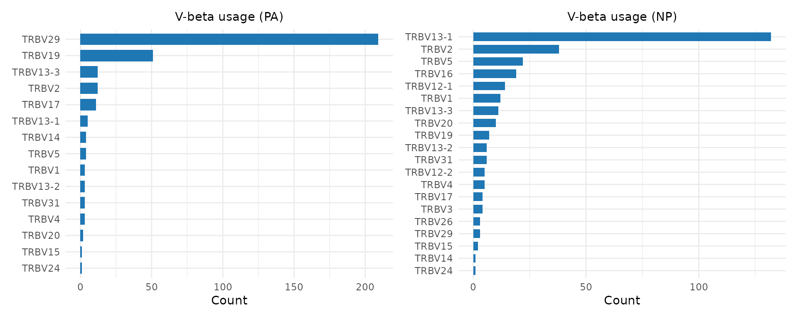
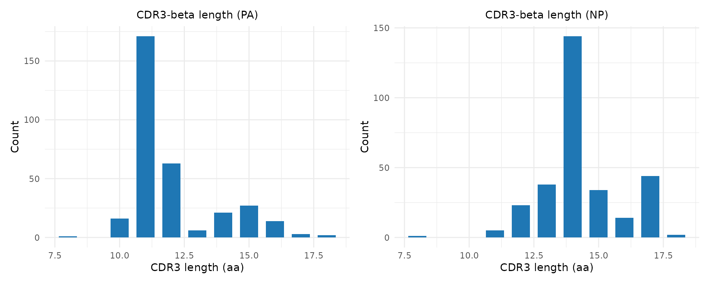
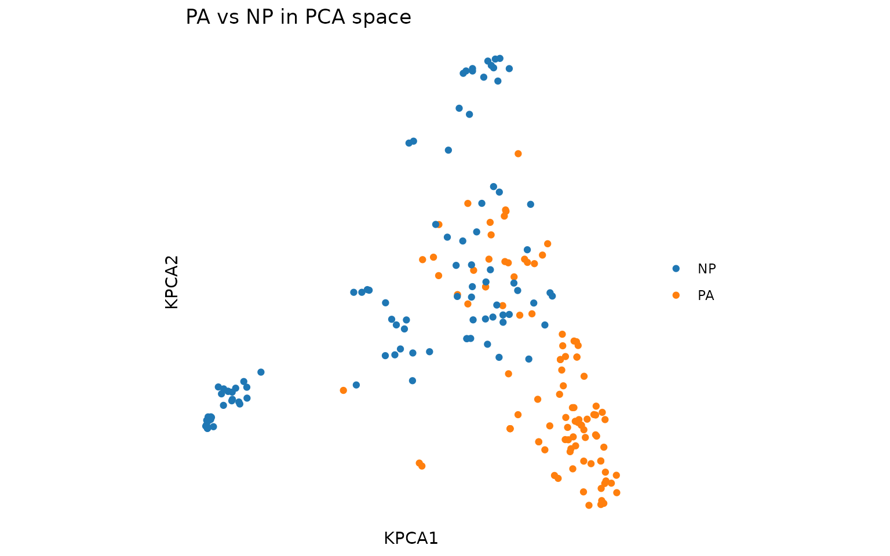
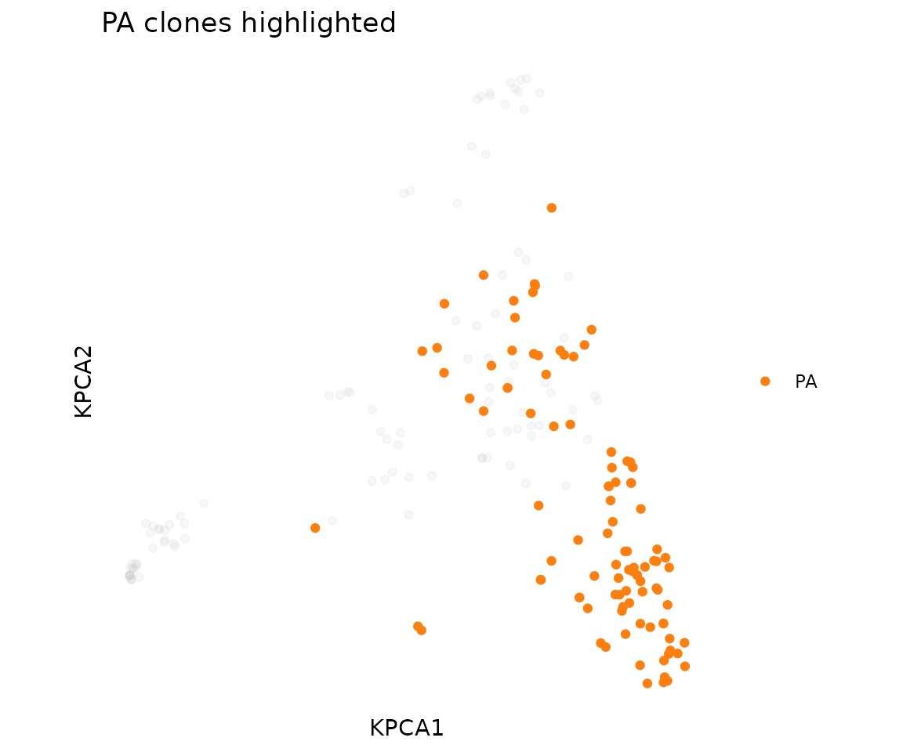

Comparing TCR Repertoires
Source:vignettes/tcrdistR-comparing-repertoires.Rmd
tcrdistR-comparing-repertoires.RmdIntroduction
Comparing TCR repertoires between conditions is one of the most common analysis tasks in immunology. Typical questions include:
- Do responders and non-responders share different TCR signatures?
- How does the repertoire change before and after treatment?
- Which epitope-specific responses are more clonally expanded?
- Are there public clonotypes shared across patients?
This vignette demonstrates comparison workflows using the DASH dataset, where we treat different epitope-specific responses as different “conditions” to compare.
Repertoire Overlap
Biological question: Do two samples share the same clonotypes?
tcr_repertoire_overlap() compares clone sharing between
two samples using three complementary metrics:
- Jaccard index: What fraction of unique clonotypes are shared? (presence/absence only)
- Morisita-Horn: Do the two samples share the same dominant clonotypes? (abundance-weighted)
- Overlap coefficient: What fraction of the smaller sample’s clonotypes are found in the larger sample?
# Create named count vectors (names = clonotype identifiers)
pa_counts <- table(pa$cdr3b)
np_counts <- table(np$cdr3b)
ov <- tcr_repertoire_overlap(pa_counts, np_counts)
ov
#> $jaccard
#> [1] 0.002645503
#>
#> $morisita_horn
#> [1] 0.0004578907
#>
#> $overlap_coef
#> [1] 0.006711409A Jaccard of 0 means no shared CDR3-beta sequences between PA and NP responses — these epitopes drive completely distinct TCR populations. This is expected for well-separated viral epitopes.
Pairwise overlap across all epitopes
epitopes <- sort(unique(dash$epitope))
n_ep <- length(epitopes)
jaccard_mat <- matrix(0, n_ep, n_ep, dimnames = list(epitopes, epitopes))
for (i in seq_len(n_ep)) {
counts_i <- table(dash$cdr3b[dash$epitope == epitopes[i]])
for (j in seq_len(i)) {
counts_j <- table(dash$cdr3b[dash$epitope == epitopes[j]])
ov <- tcr_repertoire_overlap(counts_i, counts_j, metrics = "jaccard")
jaccard_mat[i, j] <- ov$jaccard
jaccard_mat[j, i] <- ov$jaccard
}
}
round(jaccard_mat, 3)
#> F2 m139 M38 M45 NP PA PB1
#> F2 1.000 0.000 0.000 0.000 0.004 0.006 0.002
#> m139 0.000 1.000 0.008 0.004 0.000 0.000 0.005
#> M38 0.000 0.008 1.000 0.020 0.000 0.000 0.010
#> M45 0.000 0.004 0.020 1.000 0.000 0.000 0.008
#> NP 0.004 0.000 0.000 0.000 1.000 0.003 0.015
#> PA 0.006 0.000 0.000 0.000 0.003 1.000 0.004
#> PB1 0.002 0.005 0.010 0.008 0.015 0.004 1.000Epitopes with higher overlap share more CDR3 sequences, which could indicate cross-reactive TCRs or convergent V-gene usage.
Comparative Diversity
Biological question: Which immune responses are dominated by a few expanded clones, and which are broadly polyclonal?
A highly clonal response (clonality near 1) suggests strong antigen-driven expansion of specific T cell clones. A diverse response (clonality near 0) suggests either a polyclonal response or insufficient stimulation.
diversity_table <- do.call(rbind, lapply(epitopes, function(ep) {
counts <- dash$count[dash$epitope == ep]
div <- tcr_diversity(counts, order = 2, ci = FALSE)
data.frame(
epitope = ep,
n_clones = tcr_richness(counts),
clonality = round(tcr_clonality(counts), 3),
shannon = round(tcr_shannon_entropy(counts), 3),
simpson = round(div$entropy, 3),
effective_n = round(div$effective_number, 1),
gini = round(tcr_gini(counts), 3),
stringsAsFactors = FALSE
)
}))
diversity_table
#> epitope n_clones clonality shannon simpson effective_n gini
#> 1 F2 117 0.032 4.610 0.994 161.0 0.236
#> 2 m139 87 0.039 4.291 0.991 105.9 0.255
#> 3 M38 158 0.094 4.586 0.983 60.4 0.469
#> 4 M45 291 0.013 5.600 0.999 812.9 0.140
#> 5 NP 305 0.083 5.243 0.991 115.6 0.462
#> 6 PA 324 0.052 5.482 0.996 238.4 0.378
#> 7 PB1 642 0.031 6.267 0.998 654.4 0.265Interpreting the results:
- n_clones (richness): How many distinct clonotypes were detected.
- clonality: 0 = maximally diverse, 1 = single dominant clone. Epitopes with high clonality have strong clonal expansions.
- effective_n: “How many equally-abundant clonotypes would give this diversity?” Lower effective_n relative to n_clones means the repertoire is dominated by a few clones.
- gini: Inequality in clone sizes. High Gini means a few clones dominate; low Gini means clones are evenly distributed.
Visualizing Repertoire Differences
Gene usage comparison
Biological question: Do different epitope responses use different V-genes?
library(ggplot2)
library(patchwork)
p1 <- plot_gene_usage(pa, "vb", title = "V-beta usage (PA)")
p2 <- plot_gene_usage(np, "vb", title = "V-beta usage (NP)")
p1 | p2
Differences in V-gene usage between conditions can indicate germline-encoded contributions to antigen recognition. A V-gene enriched in one condition may encode CDR1/CDR2 loops that contact the target MHC-peptide complex.
CDR3 length distributions
p1 <- plot_cdr3_length(pa, chain = "beta", title = "CDR3-beta length (PA)")
p2 <- plot_cdr3_length(np, chain = "beta", title = "CDR3-beta length (NP)")
p1 | p2
CDR3 length differences can reflect constraints on peptide binding — some epitopes require longer or shorter CDR3 loops for optimal contact.
Scatter plots with faceting and highlighting
Visualize the combined repertoire in 2D, colored and faceted by epitope:
# Combine PA and NP for joint embedding
combined <- rbind(pa[1:100, ], np[1:100, ])
pca <- compute_tcrdist_kernel_pca(combined, "mouse", n_components = 5L)
plot_tcr_scatter(
pca$embeddings[, 1:2],
color_by = combined$epitope,
title = "PA vs NP in PCA space",
point_size = 1.5
)
Highlight one epitope against the background of the full repertoire:
plot_tcr_scatter(
pca$embeddings[, 1:2],
metadata = combined,
color_by = "epitope",
highlight = list(epitope = "PA"),
title = "PA clones highlighted",
point_size = 1.5
)
Shared Clonotype Identification
Biological question: Are there public TCR sequences shared across multiple individuals?
Public clonotypes — identical or near-identical TCR sequences found in different people — suggest convergent immune responses driven by common antigens. These can serve as biomarkers of infection or vaccination.
# For PA-specific TCRs, count how many subjects share each CDR3-beta
pa_by_subject <- split(pa$cdr3b, pa$subject)
all_cdr3b <- unique(pa$cdr3b)
# Count subjects per clonotype
subject_counts <- sapply(all_cdr3b, function(seq) {
sum(sapply(pa_by_subject, function(seqs) seq %in% seqs))
})
# Most public clonotypes
public <- sort(subject_counts, decreasing = TRUE)
head(public, 10)
#> CASSIGGEVFF CASSLDRGEVFF CASSSYEQYF CASSFGGEVFF CASSIGDEQYF CASSPDRGEQYF
#> 7 5 4 4 4 4
#> CASSPDRGEVFF CASSLGGEVFF CASSWGDEQYF CASSLGDEQYF
#> 3 3 3 3
cat("\nClonotypes found in >= 3 subjects:",
sum(public >= 3), "of", length(public), "\n")
#>
#> Clonotypes found in >= 3 subjects: 16 of 230For distance-based public motifs (allowing near-matches across
individuals), use find_meta_clonotypes():
meta <- find_meta_clonotypes(
pa, organism = "mouse",
radius = 48, min_nsubject = 3L,
subject_col = "subject"
)
cat("Meta-clonotypes shared across >= 3 subjects:", nrow(meta), "\n")
#> Meta-clonotypes shared across >= 3 subjects: 324
if (nrow(meta) > 0) {
head(meta[, c("cdr3a", "cdr3b", "K_neighbors", "nsubject")])
}
#> cdr3a cdr3b K_neighbors nsubject
#> 1 CAVSLDSNYQLIW CASSDFDWGGDAETLYF 324 15
#> 2 CALGDRATGGNNKLTF CASSPDRGEVFF 324 15
#> 3 CALGSNTGYQNFYF CASTGGGAPLF 324 15
#> 4 CALAPSNTNKVVF CASSQDPGDYEQYF 324 15
#> 5 CALVPSNTNKVVF CASSLGGENTLYF 324 15
#> 6 CALGKNYNQGKLIF CASDRAGEQYF 324 15Distance-Based Comparison
Biological question: How structurally different are two repertoires in TCR sequence space?
Use tcrdist_join() to find TCRs in one sample that are
similar to TCRs in another:
# Find PA TCRs within distance 100 of NP TCRs
pa_sub <- pa[1:50, ]
np_sub <- np[1:50, ]
cross_matches <- tcrdist_join(pa_sub, np_sub, organism = "mouse",
radius = 100, max_n = 3)
cat("Cross-epitope TCR pairs within radius 100:", nrow(cross_matches), "\n")
#> Cross-epitope TCR pairs within radius 100: 0Few or no cross-matches at a tight radius confirms that the two epitope responses use structurally distinct TCR repertoires.
Session Info
sessionInfo()
#> R version 4.6.0 (2026-04-24)
#> Platform: x86_64-pc-linux-gnu
#> Running under: Ubuntu 24.04.4 LTS
#>
#> Matrix products: default
#> BLAS: /usr/lib/x86_64-linux-gnu/openblas-pthread/libblas.so.3
#> LAPACK: /usr/lib/x86_64-linux-gnu/openblas-pthread/libopenblasp-r0.3.26.so; LAPACK version 3.12.0
#>
#> locale:
#> [1] LC_CTYPE=C.UTF-8 LC_NUMERIC=C LC_TIME=C.UTF-8
#> [4] LC_COLLATE=C.UTF-8 LC_MONETARY=C.UTF-8 LC_MESSAGES=C.UTF-8
#> [7] LC_PAPER=C.UTF-8 LC_NAME=C LC_ADDRESS=C
#> [10] LC_TELEPHONE=C LC_MEASUREMENT=C.UTF-8 LC_IDENTIFICATION=C
#>
#> time zone: UTC
#> tzcode source: system (glibc)
#>
#> attached base packages:
#> [1] stats graphics grDevices utils datasets methods base
#>
#> other attached packages:
#> [1] patchwork_1.3.2 ggplot2_4.0.3 tcrdistR_0.1.0
#>
#> loaded via a namespace (and not attached):
#> [1] vctrs_0.7.3 cli_3.6.6 knitr_1.51 rlang_1.2.0
#> [5] xfun_0.57 S7_0.2.2 textshaping_1.0.5 jsonlite_2.0.0
#> [9] labeling_0.4.3 glue_1.8.1 htmltools_0.5.9 ragg_1.5.2
#> [13] sass_0.4.10 scales_1.4.0 rmarkdown_2.31 grid_4.6.0
#> [17] evaluate_1.0.5 jquerylib_0.1.4 fastmap_1.2.0 yaml_2.3.12
#> [21] lifecycle_1.0.5 compiler_4.6.0 RSpectra_0.16-2 RColorBrewer_1.1-3
#> [25] fs_2.1.0 Rcpp_1.1.1-1.1 lattice_0.22-9 systemfonts_1.3.2
#> [29] farver_2.1.2 digest_0.6.39 R6_2.6.1 Matrix_1.7-5
#> [33] bslib_0.10.0 withr_3.0.2 tools_4.6.0 gtable_0.3.6
#> [37] pkgdown_2.2.0 cachem_1.1.0 desc_1.4.3